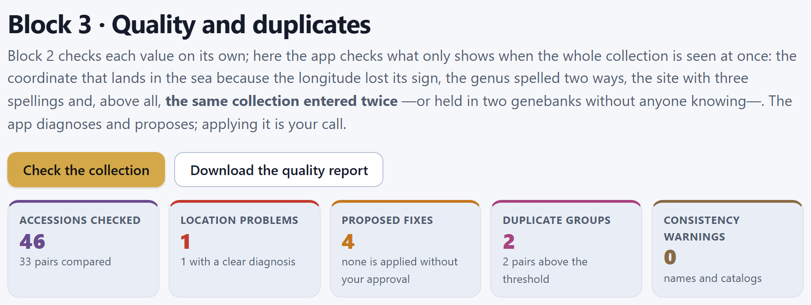
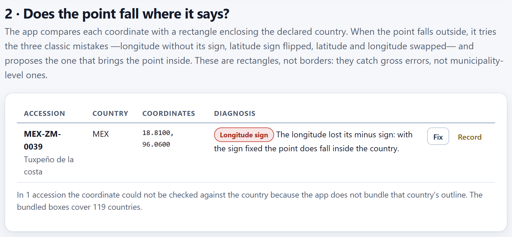
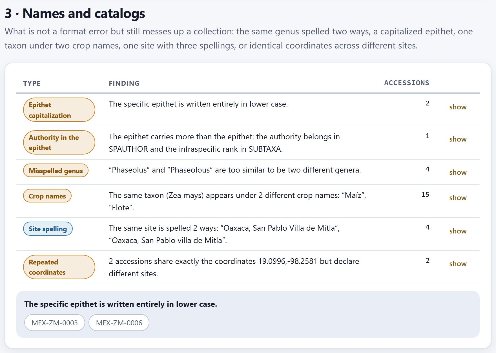
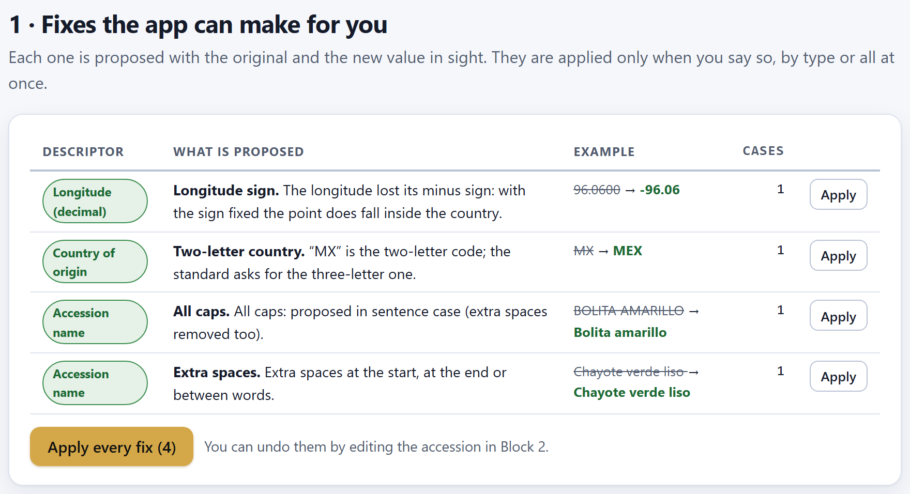
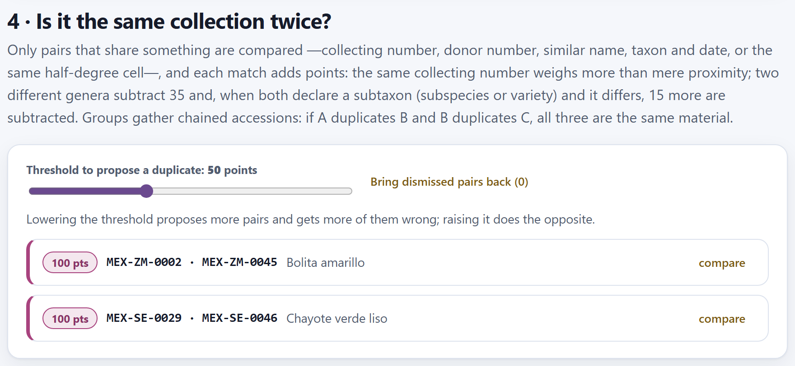
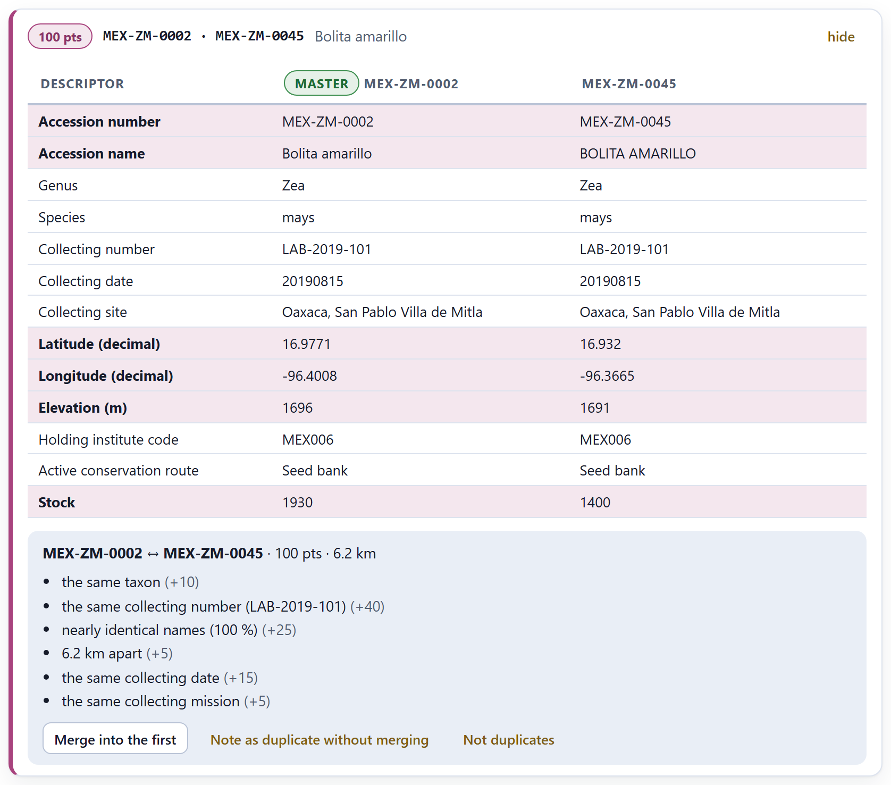
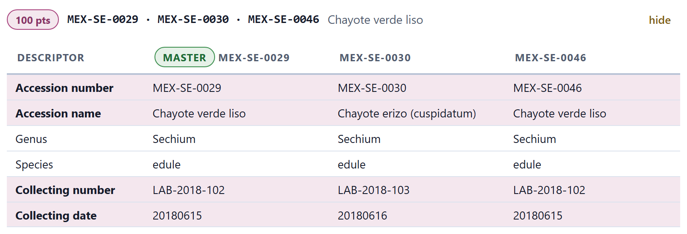
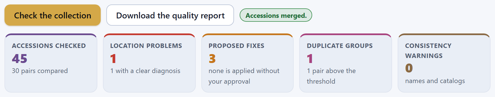

Block 2 checks each value on its own; Block 3 checks what only shows when the whole collection is looked at: the coordinate that does not fall in the country the accession declares, the genus spelled two ways, the site with several spellings and, above all, the same collection entered twice. The app diagnoses, proposes the fix and explains why; applying it, merging two accessions or dismissing a pair is your decision.
Block 3 works on the collection you loaded in Block 2 (Chapter 2) and asks for nothing else: when you enter it, the check runs by itself, with the animated wait Checking quality and duplicates, and the result is laid out in five tiles and four sections. If there are no accessions yet, the block says so —Load your accessions in Block 2 first.— and offers the button Go to the passport.

Two buttons govern the block. Check the collection runs the whole check again; it is needed when you changed something in Block 2 without leaving it, because on re-entering Block 3 the check is redone anyway. Download the quality report saves everything found in a .csv file (Section 3.8). Next to them, a green tag shows for a few seconds the result of the last thing you did: Coordinate fixed., Accessions merged., Noted in both accessions.
| Tile | Example | What it counts |
|---|---|---|
| Accessions checked | 46 | All those in the passport. Below, how many pairs were compared in the search for duplicates: 33 of the 1,035 possible (Section 3.5). |
| Location problems | 1 | The errors and warnings of section 2 (Section 3.2); below, how many of them come with a clear diagnosis, that is, are errors. Accessions that could not be compared with their country do not count. |
| Proposed fixes | 4 | The changes the app knows how to make and that await your approval (Section 3.4). |
| Duplicate groups | 2 | The groups of accessions that look like the same material; below, how many pairs are above the threshold (Sections 3.5 and 3.6). |
| Consistency warnings | 0 | The findings about names and catalogs (Section 3.3). |
On screen, the sections come in the order in which it pays to work: 1 · Fixes the app can make for you, 2 · Does the point fall where it says?, 3 · Names and catalogs and 4 · Is it the same collection twice? First you clean up what has a safe fix, and at the end you decide about the duplicates, which is what calls for the most judgment. This chapter explains the checks first (3.2 and 3.3), because the fixes (3.4) come out of them.
Of the errors planted on purpose in the example collection (Section I.7), Block 3 finds the unsigned longitude, the two-letter country and the two duplicates. The rest —the 30 February, the elevation of 25,000 m, the invented storage code, the accession without coordinates and the dates in reverse order— are errors in an isolated value and are flagged by the validation of Block 2 (Chapter 2). They are not lost here: the quality report gathers them along with everything else.
Each accession declares its country of origin in ORIGCTY and its site in DECLATITUDE and DECLONGITUDE. If the two do not agree, one of them is wrong, and almost always because of one of a few mechanical slips. The app compares each coordinate with a bounding box of the country: the rectangle, in degrees, running from its minimum to its maximum latitude and from its minimum to its maximum longitude. It bundles the boxes of 119 countries —the whole of the Americas, Europe, a good part of Africa and Asia, Australia, New Zealand, Papua New Guinea and Fiji— and gives each one a margin of one degree per side, so as not to accuse sites on the coast or the border.

The app does not check an accession that lacks the latitude or the longitude, or that has them written as something that is not a number: Block 2 takes care of that. With both coordinates present, it checks in this order:
| Tag | Level | What it detects and what the app says |
|---|---|---|
| Point (0, 0) | error | The point (0, 0): is in the Gulf of Guinea: it is an empty field written as zero. No fix is possible; the coordinate has to be looked up in the notebook. |
| Latitude = longitude | warning | Identical latitude and longitude: one was probably copied over the other. |
| Whole degrees | warning | Both are whole numbers: the site was rounded to degrees and carries more than 50 km of uncertainty. |
| Country without outline | note | The country is not among the 119: the coordinate is not compared. It does not count as a problem; it is summarized in a note under the table. |
| Longitude sign, Latitude sign, Swapped coordinates, Swapped and sign-flipped | error | The point falls outside the box and one of the classic slips brings it back inside (below). The app proposes that fix. |
| Outside the country | warning | The point falls outside and no simple fix repairs it: the coordinate or the country must be checked. |
When the point leaves the box, the app tries four repairs, one after another, and keeps the first one that brings it back into the country:
The order only matters when two repairs would work, which is rare with small boxes. Each row of the table carries the number and name of the accession, the country, the coordinates as they stand and the diagnosis —a tag with the name of the problem and the explanation—, with two buttons: Fix applies the proposed fix on the spot (and the green tag says Coordinate fixed.), and Record opens the accession’s record in Block 2 so that you can review it or correct it by hand.
The box of Mexico runs from 14.3 to 32.8 in latitude and from −118.5 to −86.6 in longitude; with the one-degree margin, from 13.3 to 33.8 and from −119.5 to −85.6. Tuxpeño de la costa (MEX-ZM-0039) declares 18.8100, 96.0600: the latitude falls inside, but the longitude +96.06 is in the eastern hemisphere, in Myanmar. The first test, changing the sign of the longitude, gives −96.06, which does fall between −119.5 and −85.6: diagnosis Longitude sign, fix 96.0600 → −96.06. The corrected point lies on the Gulf coastal plain, in Veracruz.
Below the table, the note In 1 accession the coordinate could not be checked against the country because the app does not bundle that country's outline. The bundled boxes cover 119 countries. refers to the tepary bean MEX-PH-0041, which declares its country as MX. It is not that Mexico is missing: MX is the two-letter code, and the boxes use the three-letter one. As soon as you apply the fix MX → MEX (Section 3.4), the coordinate is compared, falls inside and the note disappears.
A bounding box is generous: Mexico’s includes part of Guatemala and of the Gulf, and Chile’s a good part of Argentina. It serves the purpose it is used for here —catching a lost sign or two swapped columns, errors of hundreds or thousands of kilometers—, but it does not confirm that a point is in the right municipality or state. That fine check is done on the map of Block 4 (Chapter 4), which draws the 32 states of Mexico. For the same reason, a point that passes this check is not guaranteed to be right.
The section 3 · Names and catalogs looks for what is not a format error but still makes the collection untidy: things Block 2 cannot see because each value, on its own, is well written. Before comparing, the app normalizes the texts: it removes accents and punctuation, turns everything into lower case and collapses spaces. That is why “Maiz” and “Maíz” count as the same crop name, and in the example collection no warning comes up even though the duplicated accession writes “Maiz” without the accent.
| Tag | What it looks for |
|---|---|
| Genus capitalization | A genus that is not written with an initial capital and the rest in lower case (zea, ZEA). |
| Epithet capitalization | An epithet with some capital letter (Mays). |
| Authority in the epithet | An epithet that carries something more: a space or an initial with a full stop, as in mays L. The authority belongs in SPAUTHOR and the infraspecific rank in SUBTAXA. |
| Misspelled genus | Two genera in the collection that are too similar to be different: at a Levenshtein distance of 1 or 2, with at least five letters in the longer one. |
| Crop names | The same taxon under several crop names. The taxon includes the subspecies or variety: teosinte (Zea mays subsp. parviglumis) does not count as another name for maize. |
| Site spelling | The same site written in several ways: identical after normalizing, different as they stand. |
| Repeated coordinates | Accessions with exactly the same coordinates (to four decimals) that declare different sites: almost always, a coordinate copied from the row above. |
The Levenshtein distance is the minimum number of letters that must be inserted, deleted or changed to go from one word to another. From Phaseolus to Phaseolous there is one (the second o is extra); from Capsicum to Capcisum, two (two letters swapped cost two changes). The five-letter minimum prevents two short, different genera, which may differ by one or two letters, from accusing each other.
The example collection comes out clean: the section says Scientific names, crop names and sites are spelled consistently. and the warnings tile shows 0. For Figure 3.3, six values were altered by hand, as you could do in the record of Block 2, so that every type of warning shows up.

Each row gives the type, the finding and how many accessions it touches. The show button unfolds underneath the list of those accessions —up to 40— as buttons; each one opens its record in Block 2. Notice that mays L. comes up twice: as an epithet with a capital and as an epithet with an authority. In the crop warning, the taxon and the names appear as they are written in the passport, even though the app has already compared them in normalized form.
Of all these warnings, only the capitalization of the genus and the epithet has an automatic fix (Section 3.4). The others call for judgment: which of the two genera is the right one, whether “Elote” is an error or the local name you want to keep, which of the two accessions with the same coordinate has it right. The app takes you to the record; the decision, and the correction, are made in Block 2.
The section 1 · Fixes the app can make for you gathers the repairs that have a single reasonable answer. None is applied by itself: each one is shown with the original value struck through and the proposed one in green, and it is applied when you say so.

| Fix · descriptor | When it is proposed and what it does |
|---|---|
| The four of Section 3.2 (Longitude sign…) · decimal latitude and longitude | When the check of Section 3.2 found one of the classic slips: the sign change or the swap that brings the point back into the country. |
| Two-letter country · country of origin | When the country comes in two letters and the app knows it: it replaces it with the three-letter code the standard asks for. The app’s table has 56 codes in common use (MX, GT, PE, US, ES…, and also UK for the United Kingdom). |
| Extra spaces · accession name, collecting site, common crop name | Extra spaces at the start, at the end or between words. |
| All caps · the same three | Only a text written entirely in capitals (with some word of four letters or more). The accession name and the crop name are turned into sentence case: BOLITA AMARILLO → Bolita amarillo. The site is turned into a place name, with a capital on every word except de, la, del and the other Spanish minor words: SAN PABLO VILLA DE MITLA, OAXACA → San Pablo Villa de Mitla, Oaxaca. It also removes the surplus spaces. |
| Genus capitalization, Epithet capitalization · genus, species | The genus with an initial capital; the epithet in lower case (only if it carries no authority, which has to be moved by hand). |
| Inferred route · active conservation route | The empty conservation route when it can be derived from the storage type (STORAGE). |
| Degrees, minutes, seconds · decimal latitude and longitude | The empty decimal coordinate when there is one in degrees, minutes and seconds (LATITUDE, LONGITUDE): it computes it, with six decimals. |
Proposals are grouped by type and descriptor; each group shows its first case as an example and how many cases it has. The Apply button of a row applies that whole group (the green tag says, for example, 1 fix applied to Longitude (decimal).); Apply every fix (4), all of them at once. When fixes are applied, the passport is saved, the validation of Block 2 is redone and the check of Block 3 runs again. With the example collection, after applying the four, the tiles show 0 location problems and 0 fixes, and the note about the country without a box disappears; the two duplicate groups are still there, because correcting a name does not separate them.
Sentence case leaves in lower case everything after the first word, proper names included: TUXPEÑO DE VERACRUZ would become Tuxpeño de veracruz. Whatever already mixes upper and lower case is left alone, so this only happens with names entered entirely in capitals. There is no undo button: the app itself reminds you, You can undo them by editing the accession in Block 2. With a large collection, apply by groups, check the examples and, if in doubt, export the passport first (Chapter 2).
An accidental duplicate is the same collection recorded twice in the catalog —when digitizing an old notebook, when receiving a safety duplicate back, when merging two inventories— or the same accession kept in two genebanks without anyone knowing (Section I.3). It is almost never written identically: a capital letter, a space, the coordinate or the accession number changes. That is why the app does not look for identical rows, but for pairs that resemble each other in several things at once, and each resemblance adds points.
Before anything else, the app looks for repeated accession numbers. That is not a duplicate candidate, it is an error: if there is one, a box at the start of section 4 (Repeated accession numbers) gives the number and the two rows, and recalls that an accession number is never repeated, not even when the material really is the same.
Comparing every pair grows very fast: 46 accessions give 1,035 pairs, and 5,000 would give more than twelve million. The app only compares the pairs that share at least one blocking key:
COLLNUMB), normalized and without spaces;DONORNUMB, OTHERNUMB, separated by semicolons);Keys shorter than three letters do not count, and a key shared by more than 400 accessions is ignored, because it distinguishes nothing. For example, Bolita amarillo (MEX-ZM-0002) has the keys lab2019101 (as collecting number and as number), bolit, zea with the cell 17, −96.5 and zea mays with 2019-08. In the example collection, blocking leaves 33 pairs out of the 1,035: that is the figure shown in the first tile.
| Match | Points | Detail |
|---|---|---|
| The same collecting number | +40 | Normalized: “LAB-2019-101” and “lab 2019 101” match. |
| They share a donor or other-collection number | +35 | Not counting the collecting number, which already added. |
| Nearly identical names | +25 | Similarity of 0.92 or more (below). |
| Similar names | +12 | Similarity from 0.82 to 0.92. |
| Less than 1 km / 5 km / 25 km apart | +20 / +12 / +5 | Haversine distance between the two points. |
| The same collecting date | +15 | Full eight-digit date; if only the year matches, +5. |
| The same taxon | +10 | Same genus and epithet. |
| The same collecting mission | +5 | COLLMISSID. |
| Different genera | −35 | Almost certainly not the same thing; it replaces the taxon bonus. |
| Different subtaxa | −15 | Same genus, but both declare SUBTAXA and it does not match (subsp. mexicana versus subsp. parviglumis). |
The weights say how strong each clue is. A collecting number is assigned by the collector, one per sample: a match is almost a signature. Being close, on the other hand, is weak: many different samples are collected in the same community. No clue on its own is enough to pass the threshold of 50 points; two or three together are needed.
To compare names, the app normalizes them (without accents, case or punctuation: Tuxpeño and TUXPENO become equal) and computes two measures, keeping the larger one: the Jaro-Winkler similarity between the two strings, and a word-based measure, 0.55 + 0.45 × the proportion of shared words (Jaccard index), which only counts if they share at least one word. The second rescues names with extra or missing words: Chayote verde liso and Chayote verde.
The Jaro similarity counts the letters that match between two strings a and b within a window —a letter of a is only paired with the same letter of b if it is at most ⌊max(|a|, |b|)/2⌋ − 1 positions away—, and the transpositions t: half the paired letters that end up in a different order. With m paired letters:
Winkler added a bonus for a common prefix, because in names errors are seldom at the start: ℓ is the number of equal initial letters (up to 4) and p = 0.1. The app only applies the bonus if J is already 0.7 or more, so as not to bring together strings that do not resemble each other.
| window = ⌊6/2⌋ − 1 = 2 · all six letters are paired (T and H, one position apart) → m = 6 | |
| M A R T H A versus M A R H T A: two letters out of order → t = 2/2 = 1 | |
| J = (6/6 + 6/6 + 5/6) / 3 = 0.9444 | common prefix M-A-R → ℓ = 3 |
| JW = 0.9444 + 3 × 0.1 × (1 − 0.9444) = 0.9611, as in the app | |
Between two points on the Earth, with latitudes φ1, φ2 and longitudes λ1, λ2 in radians, the distance over the surface of a sphere of radius R is:
The app uses R = 6,371.0088 km, the mean radius of the Earth. Treating the Earth as a sphere produces errors of around 0.5 %, irrelevant for deciding whether two collections are 1, 5 or 25 km apart. Unlike subtracting degrees, the formula takes into account that a degree of longitude is shorter away from the equator.
MEX-ZM-0002 is at 16.9771, −96.4008 and MEX-ZM-0045 at 16.932, −96.3665.
| Δφ = −0.0451° = −0.00078714 rad | Δλ = 0.0343° = 0.00059865 rad |
| sin²(Δφ/2) = 1.5490 × 10−7 | cos φ1 cos φ2 = 0.95642 × 0.95665 = 0.91497 |
| sin²(Δλ/2) = 8.9595 × 10−8 | a = 1.5490 × 10−7 + 0.91497 × 8.9595 × 10−8 = 2.3687 × 10−7 |
| d = 2 × 6,371.0088 × arcsin(4.8670 × 10−4) = 2 × 6,371.0088 × 4.8670 × 10−4 = 6.2015 km | |
The app writes 6.2 km, both in the header of the pair and in the reason, and adds 5 points, because the distance lies between 5 and 25 km.
The pairs that reach the threshold are gathered into groups by transitivity: if A resembles B and B resembles C, the three form a group even if A and C do not reach the threshold between them.

Each group is a card with the highest score of its pairs, the numbers of its accessions in passport order, the name of the first one and the button compare. With the example collection and the default threshold there are 2 groups and 2 pairs, the two seeded duplicates, both with 100 points. The maize one adds up to exactly 100: the same taxon (+10), the same collecting number LAB-2019-101 (+40), nearly identical names (+25: after normalizing, BOLITA AMARILLO and Bolita amarillo are equal), 6.2 km (+5), the same date (+15) and the same mission (+5). The chayote one adds up to 102 —the same taxon, collecting number LAB-2018-102, name, 1.97 km (+12) and date— and is clipped to 100.
compare opens the card (and hide closes it). At the top, a table puts the accessions in columns, with the first one tagged as master, and up to fifteen descriptors in rows: accession number and name, genus, species, collecting number, date and site, latitude, longitude, elevation, holding institute, conservation route (with its name: Seed bank, Field genebank or living collection…), stock, other numbers and donor accession number. Rows that are empty in every accession are omitted; those that differ are highlighted in pink with the name in bold, so that you can see at a glance where they do not match.

Below come the pairs of the group, one per box: the two numbers, the score, the distance and the list of reasons, each with its points in brackets. Each pair carries its three decision buttons (Section 3.7). The distance is written the same way in the header and in the reason: in meters below 1 km, with one decimal up to 10 km (6.2 km apart) and in whole kilometers from there on.
The slider Threshold to propose a duplicate runs from 25 to 95 points, in steps of 5, and starts at 50. When you release it, the check runs again; the value is saved in the browser for next time. The app itself sums up the trade-off: Lowering the threshold proposes more pairs and gets more of them wrong; raising it does the opposite.
| Threshold | Pairs | Groups | What comes in |
|---|---|---|---|
| 40 to 95 | 2 | 2 | Only the two seeded duplicates (100 points). |
| 35 | 4 | 2 | The spiny chayote MEX-SE-0030 (39 points with each one) joins the chayote group. |
| 30 | 5 | 3 | In addition, two maizes from the same mission with similar names (32). |
| 25 | 8 | 5 | Three more pairs, of 25 to 27 points (taxon, similar name, proximity). |

Figure 3.7 shows the risk of transitivity with a low threshold. The spiny chayote adds up to 39 points with each smooth green chayote —the same taxon (+10), names 87 % similar (+12), 3.4 and 2.3 km apart (+12) and the same year (+5)— and stays in the group, although it is another collection, from another day, and in its passport it is another variety (SUBTAXA var. nigrum spinosum).
The subtraction for different subtaxa does not stop it, because the smooth green chayotes declare no variety: the app only subtracts the 15 points when both sides declare a subtaxon and it does not match. That is why the decision is taken pair by pair: here the two 39-point pairs would be dismissed with Not duplicates and only the 100-point one would be resolved.
Each pair has three ways out. None is automatic, and all three change what the app proposes afterwards.
Merge into the first turns the two accessions into one. Beforehand, the app asks for confirmation: MEX-ZM-0045 will be merged into MEX-ZM-0002 and the second will disappear from the catalog. Continue? The “first” is the one that comes earlier in the passport —usually the one that entered the catalog first— and it is the master. The merge follows three rules:
OTHERNUMB, so that any label, publication or distribution note that cites it can be traced.
With the example collection, MEX-ZM-0002 ends up with 1,930 + 1,400 = 3,330 seeds, with MEX-ZM-0045 among its other numbers, and keeps its name, its coordinate, its crop “Maíz” and its remark Raza Bolita.; the remark of the absorbed one, which explained how it had entered the catalog again, does not carry over, because the master already had its own. The merge has no undo button: if in doubt, export the passport first (Chapter 2).
Adding stocks assumes the two lots are in the same condition. If one was tested a year ago with 89 % germination and the other has another date, the master keeps only its own test: check in Block 8 (Chapter 8) whether the merged lot should be tested again. And if the two records are really the same material in two different genebanks, do not merge: note it.
Note as duplicate without merging leaves both accessions in the catalog, but records the link in both: each one receives the other’s number in OTHERNUMB and a sentence in REMARKS —in the example, Declared duplicate of MEX-SE-0046. and Declared duplicate of MEX-SE-0029.— (the sentence is written in the interface language). It is the way out for the same collection kept at two institutions, or for two lots you decide to keep apart. The pair is no longer proposed.
Not duplicates dismisses the pair without touching the passport. The dismissal —like that of a noted pair— is saved in the browser and survives closing the app, so the pair does not come back to bother you. Each dismissal is remembered by the identity of the two accessions —the institute code and the accession number of each one—, not by their place in the table, so it remains valid even if you merge, re-sort or import more accessions. The button Bring dismissed pairs back shows in brackets how many dismissals correspond to a pair of the current collection and brings them all back at once. With the example collection, after merging the maize and noting the chayote, the groups tile shows 0 and the button says (1).
Download the quality report saves quality-report.csv, in UTF-8, with one row per finding and five columns: type, level, accession, field and detail. It gathers what Block 3 found and, at the end, what the validation of Block 2 found, so it is the complete list of pending work on the collection in a single file, to work on in a spreadsheet or to attach to a report. With the interface in Spanish, the file, its columns and its texts come out in Spanish (informe-calidad.csv).
| type | Rows | level · accession · field |
|---|---|---|
geography | 2 | error, warn or info · the accession · the descriptor checked (Section 3.2). |
consistency | 0 | warn or info · all the accessions of the finding, separated by spaces · the name of the warning, as on screen (Section 3.3). |
correction | 4 | fix · the accession · the descriptor; the detail carries “before → after” and the reason (Section 3.4). |
duplicate | 2 | the score · the two accessions joined with “+” · the distance in km, with one decimal; the detail, the reasons (Section 3.5). |
passport | 29 | error or warn · the accession · the descriptor: the 3 errors and 26 warnings of the Block 2 validation (Chapter 2). |
| type | level | accession | field | detail |
|---|---|---|---|---|
| geography | error | MEX-ZM-0039 | DECLONGITUDE | The longitude lost its minus sign… |
| geography | info | MEX-PH-0041 | ORIGCTY | The app does not bundle the outline of MX… |
| correction | fix | MEX-PH-0041 | ORIGCTY | MX → MEX · "MX" is the two-letter code… |
| duplicate | 100 | MEX-ZM-0002 + MEX-ZM-0045 | 6.2 km | the same taxon; the same collecting number (LAB-2019-101); … |
| duplicate | 100 | MEX-SE-0029 + MEX-SE-0046 | 2.0 km | the same taxon; the same collecting number (LAB-2018-102); … |
| passport | warn | MEX-ZM-0001 | DUPLSITE | No safety duplicate: the accession depends on a single facility. |
The report portrays the collection at the moment it is downloaded: dismissed or noted pairs do not appear, and neither does anything you have already corrected. If you are going to hand it in, download it at the end, after applying fixes and resolving duplicates, or download one before and another after to document the clean-up.
| What you see | Why it happens and what to do |
|---|---|
| Load your accessions in Block 2 first. | There is no passport. Press Go to the passport and load your collection or the example one (Chapter 2). |
| An accession without coordinates does not appear in section 2 | Without latitude or longitude there is nothing to compare with the country. Block 2 flags it. |
| The note says an accession could not be compared | Its country is not among the 119, or it is written in two letters. Apply the ORIGCTY fix if there is one; if the country is not included, check the point on the map of Block 4. |
| An obviously misplaced point does not show up as a problem | It falls inside the country’s box, even if in the wrong state: the boxes are rectangles with a one-degree margin. Check it in Block 4. |
| A duplicate you know of does not appear | It shares no blocking key, does not reach the threshold or you dismissed it earlier. Lower the threshold or press Bring dismissed pairs back. |
| A group gathers accessions that are not the same | They came in by transitivity. Open the group and dismiss, pair by pair, those that are not. |
| A pair you had not resolved disappeared | You dismissed it or noted it earlier, perhaps in another session: the dismissal is saved with the numbers of the two accessions (Section 3.7). Press Bring dismissed pairs back. |
| You merged the wrong pair | There is no undo. Recover the accession from the passport you exported earlier, or enter it again in Block 2 with the number left in the master’s OTHERNUMB. |
| If a point has a sign or swap diagnosis | then accept the fix if the corrected site agrees with COLLSITE; if not, open the record and look up the coordinate in the notebook. |
| If a fix is about form (two-letter country, spaces, capitals) | then apply it by group after looking at the example; watch out for proper names inside a name written entirely in capitals. |
| If a names or site warning appears | then decide which form is the right one and correct it in the record of Block 2. |
| If a pair matches in collecting number, date and taxon | then it is the same collection: merge it if it is in your genebank twice; note it if it is in two genebanks. |
| If a pair only resembles each other in name, proximity or year | then compare it calmly and, if the collecting number or date differ, mark it as Not duplicates. |
| If you are going to analyze or hand in the collection | then resolve all the groups first and download the quality report at the end. |
Whatever is corrected, merged or noted in Block 3 stays in the passport: Block 2 shows it and Blocks 4 to 10 take it when they open.